知識ゼロから始める業務自動化！ Claude Code × Obsidian 最強ワークフロー
会社員・フリーランス・士業のための、 コードを書かないAI業務効率化
目次
はじめに
第1章 なぜClaude Code × Obsidianで仕事が3倍速になるのか
1-1 仕事が遅い本当の理由
1-2 Claude Codeとは何か — 「AIアシスタント」の進化版
1-3 Obsidianとは何か — 「第二の脳」を作るツール
1-4 2つのツールが「組み合わさる」と何が起きるか
1-5 「3倍速」の内訳を理解する
第2章 Obsidianを「第二の脳」にする最速セットアップ
2-1 Obsidianのインストール — 5分で完了する準備
2-2 フォルダ構成 — シンプルが一番
2-3 日次ノートを習慣化する — 最重要の1機能
2-4 リンクの張り方 — Obsidianの最強機能
2-5 必須プラグイン3選
2-6 Web Clipperで情報収集を自動化する
2-7 スマートフォンとの同期
第3章 Claude Codeで「考える仕事」を半自動化する
3-1 Claude Codeのインストール — 初心者でも15分で完了
3-2 最初の3つの指示 — 「これだけで驚く」体験
3-3 非エンジニアが陥りがちな3つの誤解
3-4 仕事別・実践的な指示フレーズ集
3-5 CLAUDE.mdで「自分専用アシスタント」を育てる
3-6 自動化事例: 週次報告書を5分で完成させる
第4章 二つを連携させる「最強ワークフロー」
4-1 MCP連携とは何か — 「つなぐ橋」を架ける
4-2 MCP設定手順 — 30分でできる初期設定
4-3 日次ルーティンを自動化する
4-4 週次レビューを15分で完成させる
4-5 プロジェクト管理を自動化する
4-6 情報収集から活用まで — 完全ワークフロー
第5章 職種別・シーン別 実践活用事例集
5-1 会社員の活用事例
人事・採用担当者の場合
営業担当者の場合
企画・マーケティング担当者の場合
5-2 フリーランスの活用事例
Webライター・コンテンツクリエイターの場合
コンサルタントの場合
デザイナー・クリエイターの場合
5-3 士業（弁護士・税理士・社労士）の活用事例
税理士・公認会計士の場合
社会保険労務士の場合
5-4 「3倍速」を実現するための行動計画
おわりに
あなたは今、こんな状況に心当たりはありませんか。
毎日同じような仕事の繰り返しで、気づけば夜9時。
やることリストは消えるどころか増え続け、「もっと効率よくできればいいのに」と思いながら、また翌日も同じ日常が始まる。
AIという言葉はもう何年も前から耳にしています。
ChatGPTも試してみた。
でも結局、「なんとなくすごそう」で止まって、日々の仕事には組み込めていない。
Obsidianというメモアプリが話題だと聞いてインストールしてみたけれど、ノートが増えるだけで活用できている気がしない。
そういう方に向けて、この本は書かれました。
本書で紹介するのは、Claude CodeとObsidianという2つのツールの組み合わせです。
この2つを連携させることで、日々の仕事が劇的に変わります。
実際、この方法を実践した人からは「仕事にかかる時間が半分以下になった」「週12時間以上の余裕が生まれた」「資料作成が怖くなくなった」という声が続々と届いています。
「でも、Claude Codeってエンジニア向けじゃないの？」
その心配は不要です。
プログラミングの知識はゼロで構いません。
本書では、コードを一行も書かずに使いこなせる方法だけを紹介します。
ターミナルの操作も、専門的な設定も、最初の一歩だけクリアすれば、あとは自然言語で日本語を入力するだけです。
本書の構成を簡単に紹介します。
第1章では、Claude Code × Obsidianがなぜ仕事を3倍速にするのかを、全体像とともに解説します。
第2章では、Obsidianを「第二の脳」として機能させるための最速セットアップを説明します。
第3章では、Claude Codeを非エンジニアが使うための実践的な方法を紹介します。
第4章では、2つのツールを連携させて、日次・週次の業務を自動化する方法を解説します。
第5章では、会社員・フリーランス・士業それぞれの職種別活用事例を紹介します。
読みながら、自分の仕事に当てはめて考えてみてください。
きっと「あ、これなら自分でもできる」という感覚を持てるはずです。
では、一緒に始めましょう。
はじめに
01第1章 なぜClaude Code × Obsidianで仕事が3倍速になるのか
第1章 なぜ仕事が3倍速になるのか
1-1 仕事が遅い本当の理由
「もっと効率よく仕事したい」と思わない人はいないでしょう。
それなのに、なぜ多くのビジネスパーソンは仕事の効率化に苦しんでいるのでしょうか。
答えは意外なところにあります。
仕事が遅い原因は、能力や経験の問題ではありません。
本当の問題は「情報の流れが断ち切られている」ことにあります。
たとえば、あなたは会議で重要な決定事項をメモしました。
でも、そのメモはスマートフォンのメモアプリに入ったまま、翌週の報告書作成時には「どこに書いたっけ？」と探し回ることになる。
探している時間、実は何も仕事が進んでいません。
あるいは、先週調べた情報が今日また必要になった。
でも、あの資料はどのフォルダに保存したか思い出せず、また同じことを調べ直す。
このような「情報の再探索コスト」が、仕事の時間の30〜40%を占めているという研究があります。
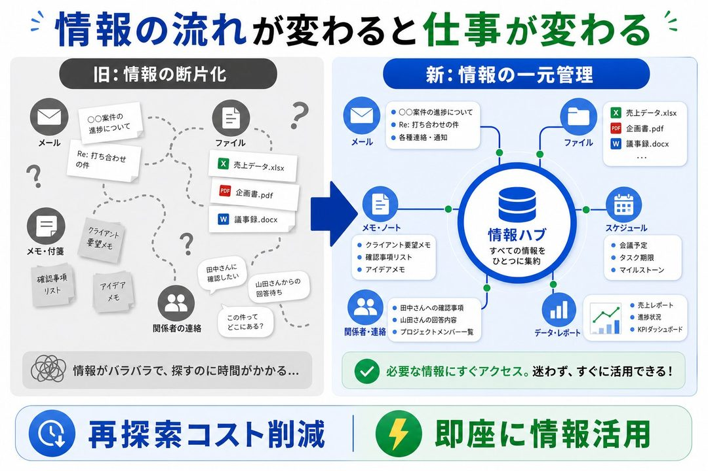
情報の流れが変わると仕事が変わる
さらに、メールへの返信、定型的なレポート作成、データの転記作業。
これらは「考える仕事」ではなく「こなす仕事」です。
でも、一日の中でこういった作業に費やす時間は非常に多い。
Anthropicの調査によれば、Claude Codeを活用したビジネスパーソンは週平均12.3時間の時間削減を達成しています。
週5日で割ると、毎日約2.5時間が手元に戻ってくる計算です。
1-2 Claude Codeとは何か — 「AIアシスタント」の進化版
Claude Codeについて、まず正確に理解しておきましょう。
「ChatGPTと何が違うの？」という疑問をよく聞きます。
ChatGPTをはじめとする一般的なAIチャットは、「質問→回答」の形式で使います。
あなたが文章を打ち込み、AIが答えを返す。
それだけです。
Claude Codeは違います。
Claude Codeは、あなたのパソコン内のファイルに直接アクセスし、操作することができます。
つまり、「この書類をまとめて」「この情報を整理して報告書にして」という指示を受けたとき、実際にファイルを開き、読み込み、新しい文書を生成して保存するところまで、一連の作業を自動で実行してくれます。
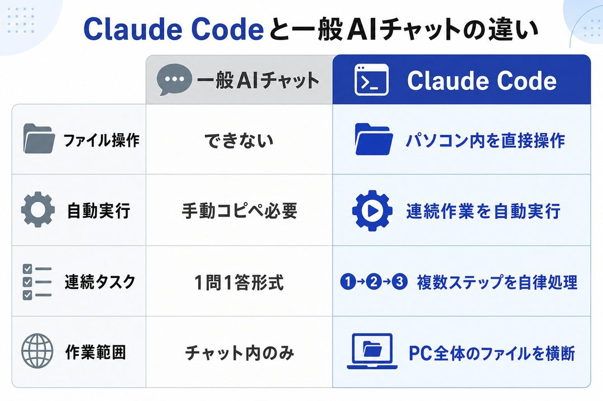
Claude Codeと一般AIチャットの違い
エンジニアがコード開発に使うイメージが強いClaude Codeですが、実際には文章・手順・ファイルをまたぐすべての仕事に対応できます。
具体的には：
- 会議のメモから議事録を自動生成し、関係者へのメール文まで作成する
- 複数のExcelファイルを読み込み、月次レポートを一発で生成する
- 大量のメールを分析し、優先度と返信内容を提案する
- 参考資料を読み込んで、プレゼンのスライド構成案を作る
これらを、日本語で話しかけるだけで実行してくれます。
1-3 Obsidianとは何か — 「第二の脳」を作るツール
Obsidianは、ローカル型のノートアプリです。
「ローカル型」というのは、データがあなたのパソコンの中に保存されるということです。
クラウド上にデータが飛ばないため、機密情報も安心して保存できます。
Obsidianの最大の特徴は、ノート同士をリンクで結べることです。
普通のメモアプリは、ノートがバラバラに存在するだけです。
Obsidianでは、「このノートはあのノートと関連している」というリンクを張れます。
これにより、あるアイデアから関連する情報へ、芋づる式にたどっていける「知識のネットワーク」が生まれます。
人間の脳も、記憶は孤立したものではなく、関連する記憶と結びついて存在しています。
Obsidianはまさに、この脳の仕組みを模倣した「第二の脳」なのです。
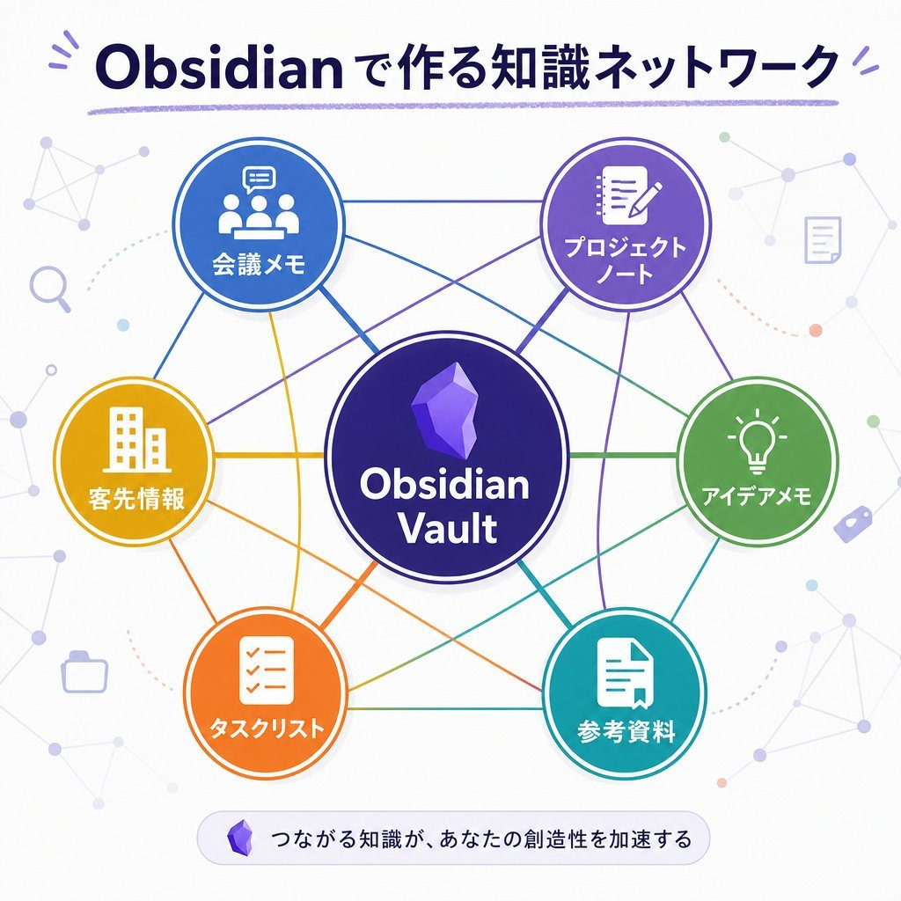
Obsidianで作る知識ネットワーク
1-4 2つのツールが「組み合わさる」と何が起きるか
Claude CodeとObsidianを単独で使っても、それぞれ便利なツールです。
でも、この2つを連携させると、全く別の次元の生産性が生まれます。
仕組みはシンプルです。
Obsidianに蓄積された「あなたの知識と情報のすべて」を、Claude Codeが参照できるようになる。
つまり、あなたが過去1年間に書いたメモ、蓄積した情報、整理したプロジェクト情報を、すべてClaude Codeが「知っている」状態で仕事を手伝ってくれます。
「先月の○○プロジェクトの議事録から、まだ未解決の課題を抽出して」
「この2年間の顧客メモを分析して、共通する悩みのパターンを教えて」
こういった指示が、実現できるようになります。
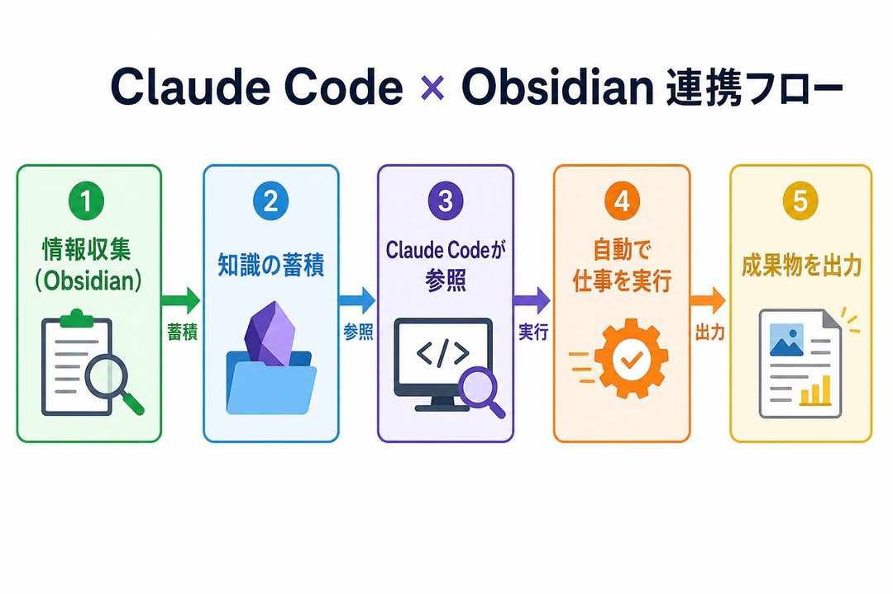
Claude Code × Obsidian 連携フロー
1-5 「3倍速」の内訳を理解する
「3倍速」という言葉は大げさに聞こえるかもしれません。
でも、実際の内訳を見ると、これは十分にリアルな数字です。
① 情報の再探索がゼロになる（時間削減: 約30%）
Obsidianに情報を一元管理することで、「あの情報どこだっけ？」という時間がほぼゼロになります。
② 定型作業をAIが代行する（時間削減: 約40%）
議事録作成、メール返信の下書き、定型レポートの作成などをClaude Codeに任せることで、「こなす仕事」の時間が大幅に削減されます。
③ アイデアの質が上がり、手戻りが減る（時間削減: 約30%）
蓄積された知識を参照しながらClaude Codeが提案を作るため、「やり直し」が大幅に減ります。
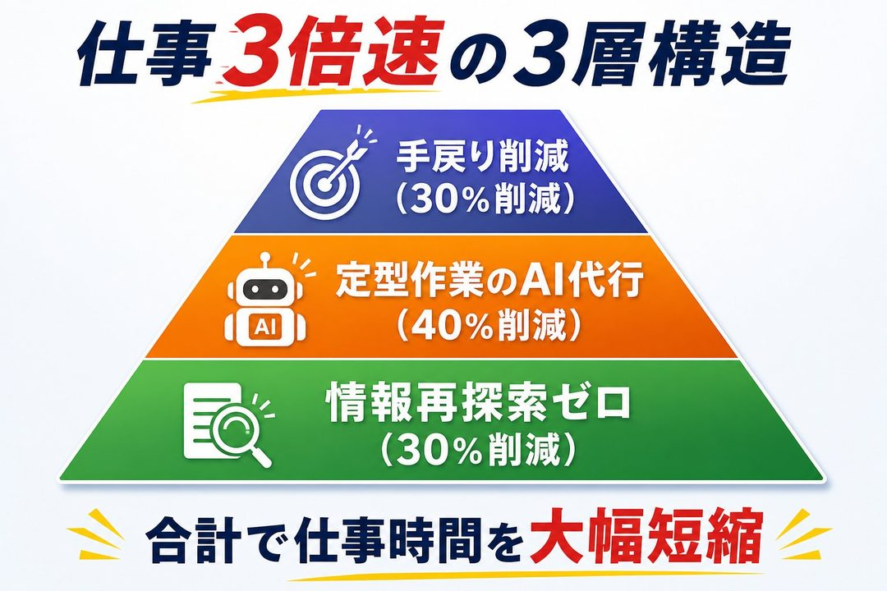
仕事3倍速の3層構造
この3つが重なることで、結果として仕事にかかる時間が3分の1以下になっていくのです。
次の章から、具体的なセットアップと使い方を説明します。
難しいことは何もありません。
一つひとつ、一緒に進めていきましょう。
02第2章 Obsidianを「第二の脳」にする最速セットアップ
第2章 Obsidianセットアップ
2-1 Obsidianのインストール — 5分で完了する準備
Obsidianのインストールは驚くほど簡単です。
公式サイト（obsidian.md）にアクセスして、「Get Obsidian for free」をクリック。
あなたのOS（Windows・Mac・iOS・Android）に対応したバージョンをダウンロードして、インストールするだけです。
料金について、基本機能は完全無料で使えます。
個人利用であれば、無料版で本書のすべての内容を実践できます。
インストールが完了したら、最初に「Vault（ヴォルト）」を作成します。
Vaultとは、Obsidianにおけるノートの保存場所のことです。
「仕事ノート」という名前でVaultを作り、パソコンの分かりやすい場所（例: デスクトップやDocumentsフォルダ）に保存してください。
Obsidianセットアップ5ステップ
2-2 フォルダ構成 — シンプルが一番
Obsidianを使い始めると、多くの人が「どうフォルダを整理しよう？」と考え込んでしまいます。
最初はシンプルに始めることが鉄則です。
推奨するフォルダ構成は以下のとおりです：
このシンプルな5フォルダ構成から始めることをお勧めします。
「00_インボックス」が特に重要です。
「とりあえずここに入れる」場所を作ることで、「整理するのが面倒」という心理的ハードルが下がります。
整理は後でいつでもできます。
まず「捨てない」「残す」習慣を先につけることが重要です。
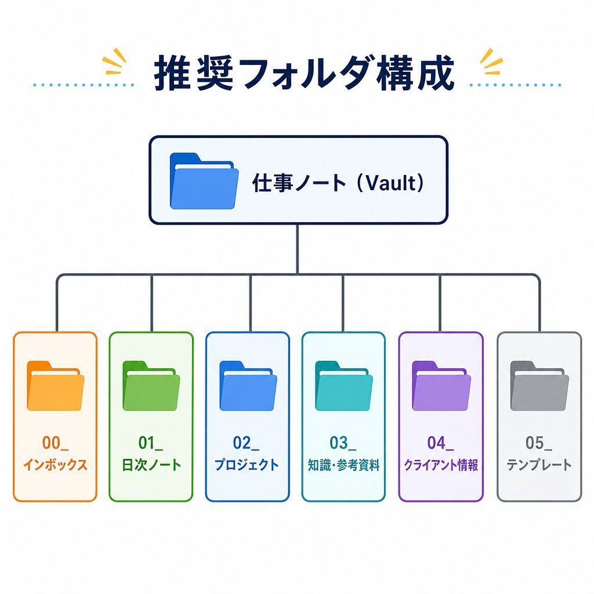
推奨フォルダ構成
2-3 日次ノートを習慣化する — 最重要の1機能
Obsidianには多くの機能がありますが、まず日次ノートだけマスターしてください。
日次ノートとは、毎日1枚作る「その日のログ」です。
設定方法は簡単です。
Obsidianの設定画面（左下の歯車アイコン）→「コアプラグイン」→「日次ノート」をオンにするだけです。
毎朝、Obsidianを開いてその日の日次ノートを作成し、以下の内容を書く習慣をつけましょう：
たったこれだけです。
最初は「こんなシンプルで意味あるの？」と思うかもしれません。
でも、1ヶ月後に振り返ったとき、過去の自分が何をしていたか、何を考えていたかが一目でわかる「仕事の記録」が手元に残っています。
これが後に、Claude Codeと連携したときに「知識の宝庫」として機能します。
日次ノートの習慣サイクル
2-4 リンクの張り方 — Obsidianの最強機能
日次ノートに慣れてきたら、次はリンクを使いましょう。
Obsidianでリンクを張る方法は、`[[` を入力するだけです。
例えば、日次ノートに「○○プロジェクトの件でA社と打ち合わせ」と書いたとき、
`[[○○プロジェクト]]` と書くことで、そのプロジェクトのノートへのリンクが自動的に張られます。
リンクを積極的に使うことで、情報の「孤島」がなくなります。
「グラフビュー」機能を使うと、あなたのノートのつながりが視覚的に見えます。
左サイドバーの「グラフビュー」アイコンをクリックしてみてください。
ノートが点（ノード）として表示され、リンクが線（エッジ）として表示されます。
これがあなたの「第二の脳」の全体像です。
2-5 必須プラグイン3選
Obsidianの真価はプラグインにあります。
無数のプラグインがありますが、最初は以下の3つだけ入れればOKです。
① Templater（テンプレーター）
ノートのテンプレートを自動挿入するプラグインです。
「毎日同じ形式の日次ノートを作りたい」「打ち合わせメモはいつも同じ項目から始めたい」という場合に使います。
② Dataview（データビュー）
ノートの情報を「データベース」として検索・集計できるプラグインです。
「今週の未完了タスクを全部表示して」という操作ができるようになります。
③ Calendar（カレンダー）
右サイドバーにカレンダーが表示され、各日の日次ノートに直接アクセスできます。
「3週間前の○曜日のメモ」を一瞬で開けるようになります。
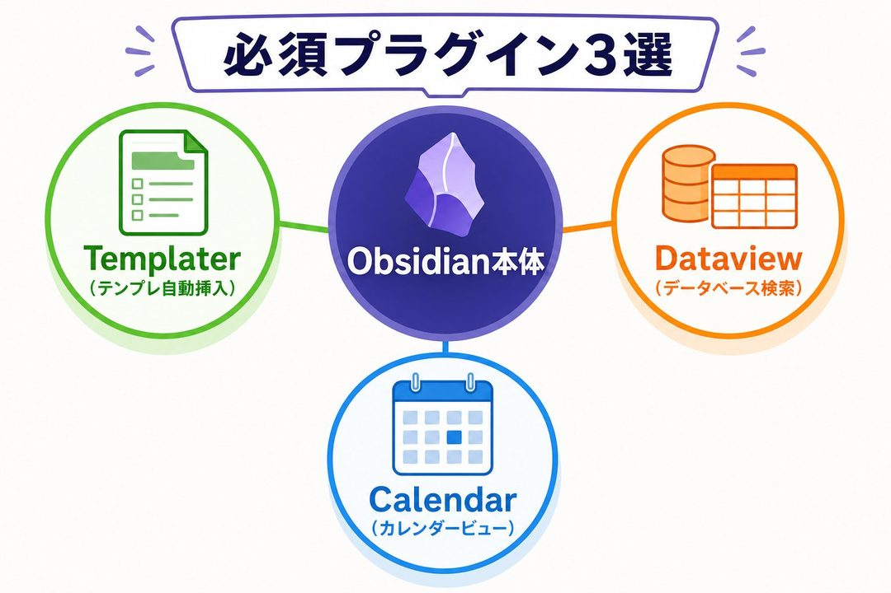
必須プラグイン3選
プラグインの導入方法は：
設定 → コミュニティプラグイン → 「コミュニティプラグインを有効にする」→ プラグイン名を検索 → インストール
これだけです。
数分で完了します。
2-6 Web Clipperで情報収集を自動化する
Obsidianの公式拡張機能「Obsidian Web Clipper」をブラウザに導入すると、Webサイトの記事を一クリックでObsidianに保存できます。
Chrome・Firefox・Safariに対応しており、ブラウザの拡張機能ストアから無料でインストールできます。
使い方は、気になる記事を読んでいるときに拡張機能のアイコンをクリックするだけ。
記事のタイトル・URL・本文が、指定したObsidianのフォルダに自動保存されます。
これにより「あとで読もうと思ってブックマークしたまま忘れた」という問題が解消されます。
保存した記事は「03_知識・参考資料」フォルダに蓄積され、後でClaude Codeが参照できる「知識のストック」となります。
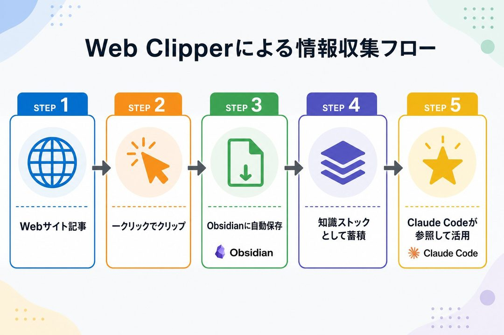
Web Clipperによる情報収集フロー
2-7 スマートフォンとの同期
「パソコンでしか使えないの？」という心配は不要です。
iCloud（Mac/iPhone）またはDropbox/OneDriveを経由することで、スマートフォンのObsidianアプリと同期できます。
電車の中でスマートフォンで思いついたアイデアをObsidianに書いておけば、デスクに戻ったときにはそのメモがパソコンでも確認できます。
情報が一カ所に集まる仕組みが完成します。
03第3章 Claude Codeで「考える仕事」を半自動化する
第3章 Claude Codeで仕事を半自動化
3-1 Claude Codeのインストール — 初心者でも15分で完了
「ターミナル」や「コマンドライン」という言葉に、アレルギー反応を感じる方は多いと思います。
でも、Claude Codeのインストールは実は非常にシンプルです。
必要なもの
- Claude Pro または Maxプラン（月額約3,000円〜）への加入
- Node.js（無料のプログラム実行環境）のインストール
手順
まず、Node.jsの公式サイト（nodejs.org）から最新版をダウンロード・インストールします。
これは「普通のソフトのインストール」と全く同じ手順です。
次に、ターミナル（Macの場合）またはコマンドプロンプト（Windowsの場合）を開き、以下のコマンドを1行だけ実行します：
「コマンドを実行する」というのは、この1行をコピーして貼り付けて、Enterキーを押すだけです。
これでインストール完了です。
以降は、作業したいフォルダをターミナルで開き、`claude` と入力するだけで起動します。
Claude Codeインストール3ステップ
3-2 最初の3つの指示 — 「これだけで驚く」体験
インストールしたら、最初にぜひ試してほしい3つの指示があります。
指示1: 文章の要約・整理
Claude Codeはファイルを開いて読み込み、整理された結果を出力してくれます。
指示2: 文書の自動生成
会議メモから議事録メールの文案が、自動生成されます。
指示3: 複数ファイルの横断処理
1ヶ月分のノートを一気に分析し、パターンを見つけてくれます。
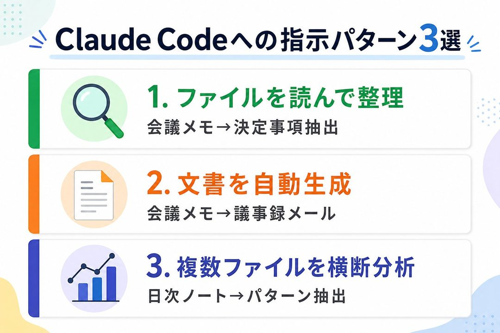
Claude Codeへの指示パターン3選
3-3 非エンジニアが陥りがちな3つの誤解
Claude Codeを使い始めた非エンジニアの方がよく陥る誤解があります。
あらかじめ知っておくと、つまずかずに使いこなせます。
誤解1:「プログラミングの知識が必要だ」
不要です。
Claude Codeへの指示はすべて日本語で構いません。
「このファイルを分析して」「こういう文書を作って」という自然な言葉で伝えるだけです。
誤解2:「ミスをしたら取り返しがつかない」
Claude Codeはファイルを削除する操作は、明示的に指示しない限り行いません。
基本的に「読む」「新しく作る」「修正する」の操作がメインです。
また、Windowsなら「元に戻す（Ctrl+Z）」、Macなら「Command+Z」でいつでも取り消せます。
誤解3:「一回の指示で完璧な結果が出るはず」
Claude Codeとの作業は、会話のキャッチボールです。
最初の出力に「もう少しこうして」「この部分をもっと詳しく」と追加指示することで、どんどん良くなっていきます。
最初から100点を求めず、60点の出力から対話で100点に近づけていくイメージを持ちましょう。
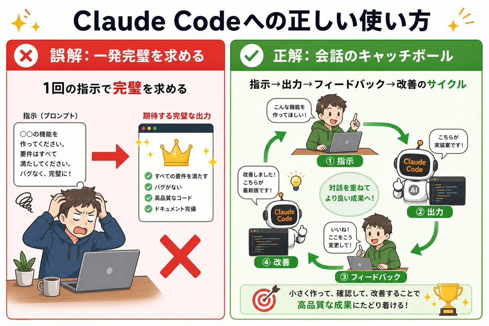
Claude Codeへの正しい使い方
3-4 仕事別・実践的な指示フレーズ集
Claude Codeに指示するときは、以下のような「フレーズのパターン」を使うと効果的です。
情報整理・分析系
- 「〇〇のファイルを読んで、重要なポイントを3〜5点にまとめてください」
- 「この資料の中から、□□に関連する部分だけ抜き出してください」
- 「先月の日次ノートを分析して、時間をとられているタスクのパターンを教えてください」
文書作成・加工系
- 「この箇条書きメモを、ビジネスメールの文体に整えてください」
- 「この報告書の下書きを、上司が読みやすいように構成を整理してください」
- 「以下の素材から、1000字程度の提案書の冒頭文を書いてください」
ファイル操作・自動化系
- 「このフォルダにある全てのテキストファイルを読んで、タイトルと概要の一覧を作成してください」
- 「これらの情報を整理した表形式のファイルを新規作成してください」
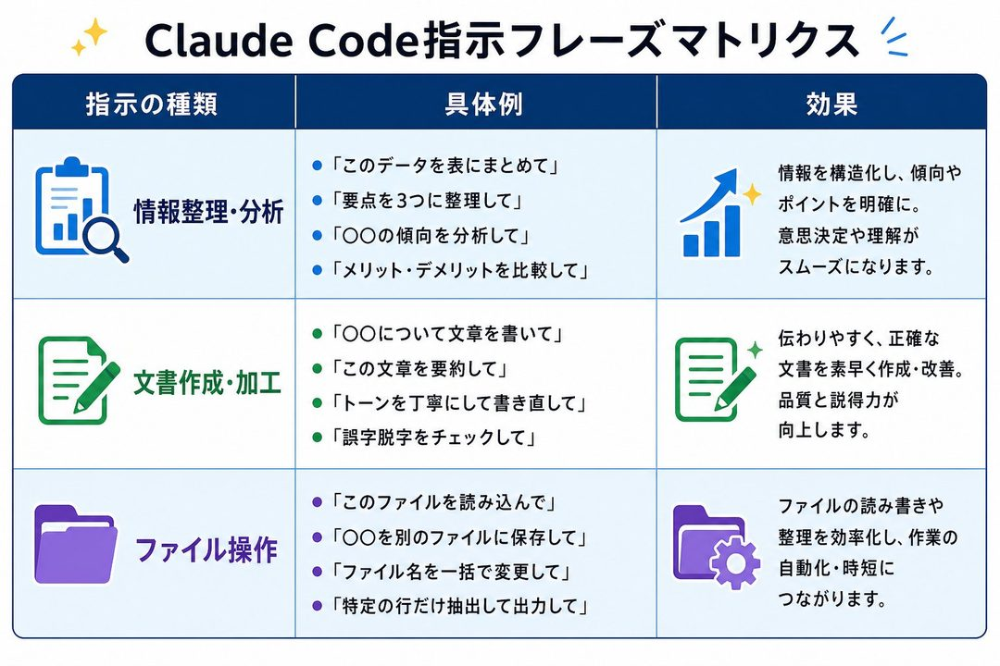
Claude Code指示フレーズマトリクス
3-5 CLAUDE.mdで「自分専用アシスタント」を育てる
Claude Codeには、CLAUDE.mdという設定ファイルを使って「自分専用の指示」をあらかじめ設定しておく機能があります。
これはとても強力な機能です。
例えば、仕事ノートのフォルダに「CLAUDE.md」というファイルを作り、以下のように書いておきます：
これを設定しておくと、次回からClaude Codeはこの情報を「知っている状態」でスタートします。
毎回同じ説明をする必要がなくなり、より的確なアシストを受けられます。
CLAUDE.mdは、あなた専用のAIアシスタントを「育てる」ためのツールです。
3-6 自動化事例: 週次報告書を5分で完成させる
具体的な自動化事例を見てみましょう。
従来の週次報告書作成の流れ：
1. 先週の日次ノートを読み返す（15分）
2. 重要事項を拾い出す（10分）
3. 報告書フォーマットに書き写す（20分）
4. 文章を整える（15分）
→ 合計60分
Claude Code活用後の流れ：
→ 5分で完成
最初の数回は「もう少しこうして」という微調整が必要かもしれませんが、
CLAUDE.mdでパターンを学習させると、どんどん精度が上がっていきます。
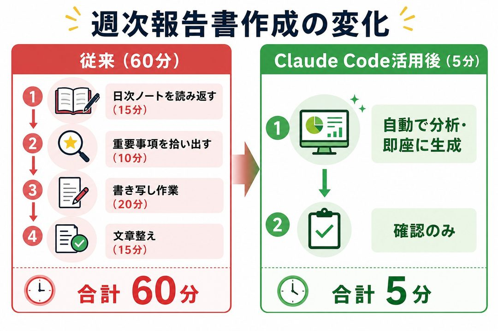
週次報告書作成の変化
04第4章 二つを連携させる「最強ワークフロー」
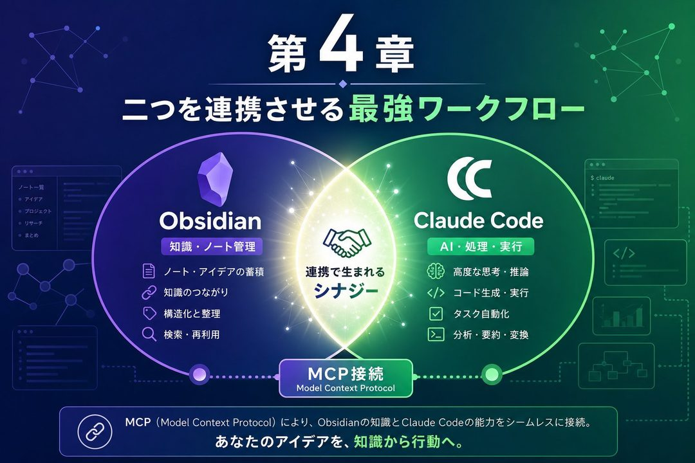
第4章 最強ワークフロー
4-1 MCP連携とは何か — 「つなぐ橋」を架ける
MCP（Model Context Protocol）は、Claude CodeとObsidianを直接つなぐための「橋」です。
難しそうな名前ですが、要はObsidianのデータをClaude Codeがリアルタイムで読み書きできるようにする仕組みです。
MCPを設定すると、こんなことが可能になります：
- Obsidianに新しいノートを自動で追加する
- Claude Codeとの会話内容を自動的にObsidianに保存する
- 「今日の日次ノートに〇〇を追記して」という指示が使えるようになる
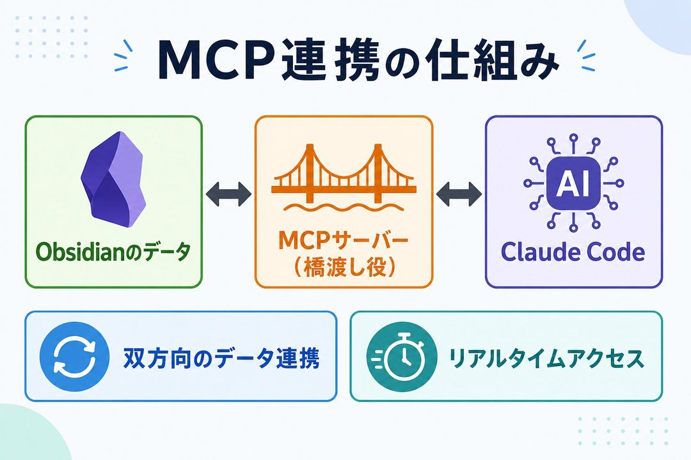
MCP連携の仕組み
4-2 MCP設定手順 — 30分でできる初期設定
MCP連携の設定は、以下の手順で行います。
ステップ1: ObsidianにLocal REST APIプラグインをインストール
Obsidianの「コミュニティプラグイン」から「Local REST API」を検索してインストール。
設定画面でAPIキー（長い英数字の文字列）が表示されるので、コピーして保存しておきます。
ステップ2: MCP設定ファイルを作成
ホームフォルダ（`C:\Users\ユーザー名\`）に `.claude.json` というファイルを作成し、以下を記述します：
ステップ3: Claude Codeを再起動
ターミナルでClaude Codeを再起動すると、ObsidianのMCPサーバーが自動的に接続されます。
設定完了後、「今日の日次ノートを開いて」と指示してみてください。
Claude CodeがObsidianのノートを読み込めることを確認できます。
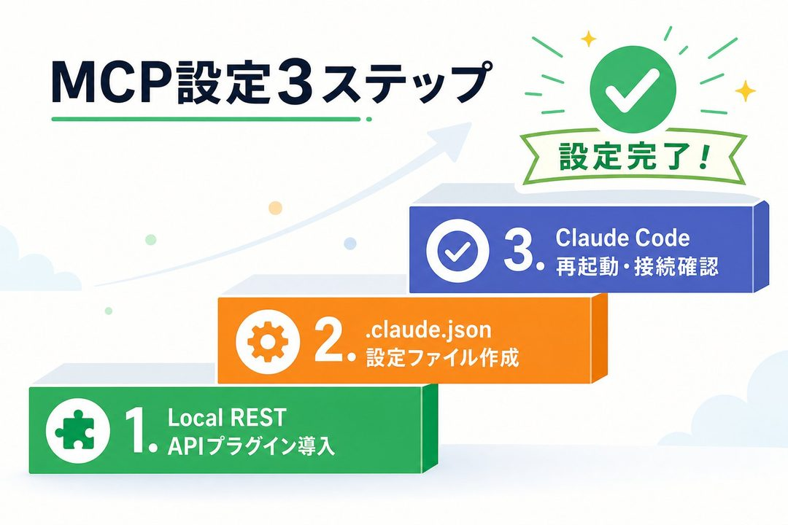
MCP設定3ステップ
4-3 日次ルーティンを自動化する
MCP連携が完成したら、日次ルーティンの自動化を始めましょう。
毎朝実行する「デイリースタートアップ」の自動化手順です。
朝の指示例：
これにより：
- 昨日の未完了タスクが自動で今日のノートに転記される
- 日次ノートの作成が30秒以内で完了する
- 「昨日何を積み残したっけ？」という確認作業が不要になる
夕方の指示例：
日次ルーティン自動化サイクル
4-4 週次レビューを15分で完成させる
週次レビューは、多くの人が「やりたいけどできていない」習慣のひとつです。
Claude Code × Obsidianの連携を使えば、15分で高品質な週次レビューができるようになります。
週次レビューの指示例：
1分もかからずClaude Codeが分析を始め、5〜10分で週次レビューノートが完成します。
あとはあなたが確認して、「このポイントをもっと詳しく」と追加指示するだけです。
従来: 週次レビューに1〜2時間かかり、ついサボってしまう
連携後: 15分で高品質なレビューが完成、習慣化しやすい
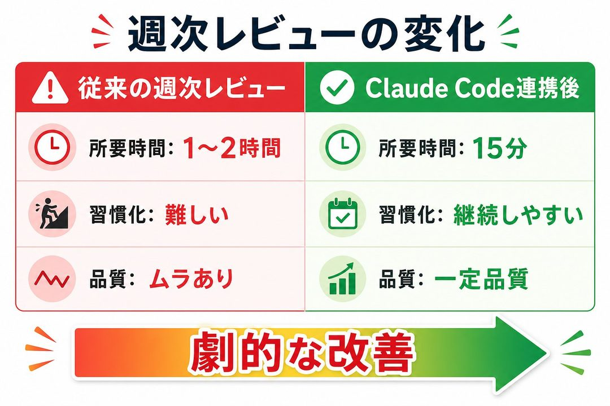
週次レビューの変化
4-5 プロジェクト管理を自動化する
仕事の中心は「プロジェクト管理」です。
Claude Code × Obsidian連携で、プロジェクト管理を半自動化できます。
プロジェクト開始時の指示：
プロジェクト中の指示：
プロジェクト終了時の指示：
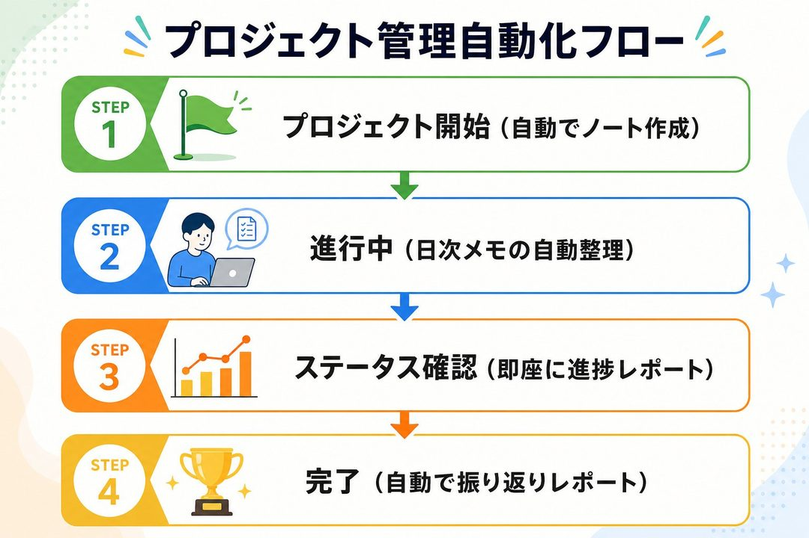
プロジェクト管理自動化フロー
4-6 情報収集から活用まで — 完全ワークフロー
最終的な「完全ワークフロー」を整理しましょう。
STEP1: 情報収集（Obsidian Web Clipper）
- 興味ある記事をWeb Clipperで一クリック保存
- 03_知識・参考資料フォルダに自動蓄積
STEP2: 仕事中のメモ（日次ノート）
- 会議・打ち合わせのメモは日次ノートにリアルタイム記録
- 重要な内容には `[[プロジェクト名]]` でリンクを張る
STEP3: 整理・活用（Claude Code）
- 蓄積した情報を元に文書・報告書・企画書を自動生成
- 複数ノートを横断分析して、パターンや課題を抽出
STEP4: 振り返り（週次・月次レビュー）
- Claude Codeが自動で週次・月次のレビューノートを生成
- 振り返りの習慣が「ラク」に続けられる
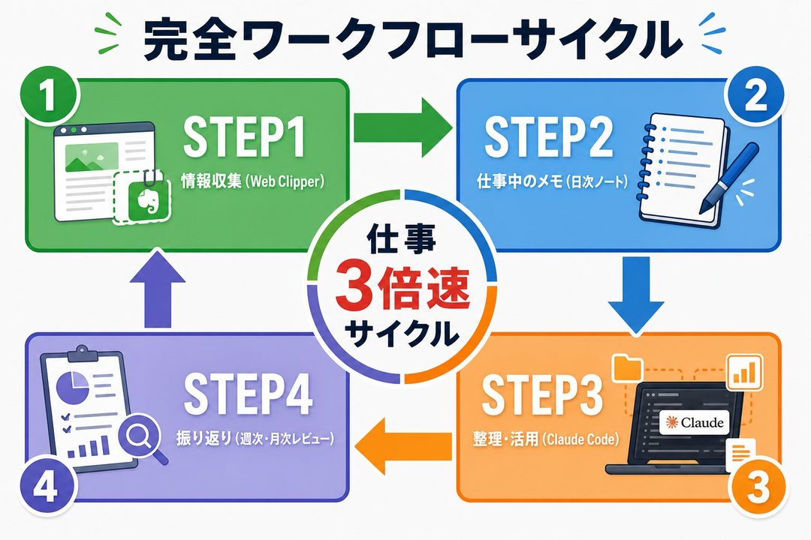
完全ワークフローサイクル
05第5章 職種別・シーン別 実践活用事例集
第5章 職種別実践活用事例集
5-1 会社員の活用事例
人事・採用担当者の場合
課題: 採用面接のメモが散らばり、候補者ごとの評価をまとめるのに時間がかかる
活用法:
1. 面接後、Obsidianの「04_採用候補者」フォルダに候補者名でノートを作成
2. 面接中に気づいた点・強み・懸念点を箇条書きでメモ
3. 面接後、Claude Codeに指示：
結果: 面接後の評価シート作成が30分→5分に短縮。
複数候補者の比較も「全候補者のノートを読んで、評価スコア順にランキングして」で一瞬で完成。
営業担当者の場合
課題: 商談メモが蓄積されるが、次回訪問前の「前回の振り返り」に時間がかかる
活用法:
1. 商談後、Obsidianの「04_クライアント情報」フォルダに商談ノートを作成
2. `[[会社名]]` でリンクし、その会社の全商談履歴が一覧で見える状態を作る
3. 訪問前日に：
結果: 訪問前の準備時間が1時間→15分に短縮。
顧客の細かいニーズや過去の会話を正確に覚えているため、顧客満足度が向上。
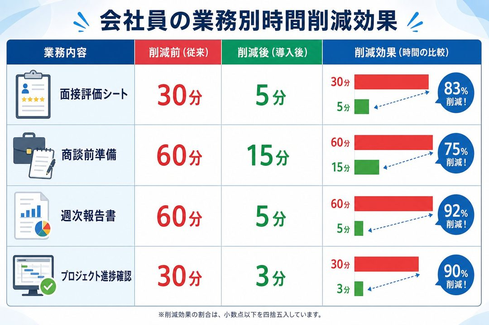
会社員の業務別時間削減効果
企画・マーケティング担当者の場合
課題: 市場調査の情報が多すぎて整理しきれず、企画書に活かしきれない
活用法:
1. Web Clipperで競合情報・市場トレンド・業界ニュースをObsidianに収集
2. `#競合情報` `#市場トレンド` などのタグで分類
3. 企画書作成時：
結果: 競合分析作業が半日→2時間に短縮。
日頃から情報収集しているため、急な企画依頼にも即座に対応できるようになる。
5-2 フリーランスの活用事例
Webライター・コンテンツクリエイターの場合
フリーランスのライターにとって、ネタ切れとリサーチ時間は永遠の課題です。
活用法:
1. 普段から気になった記事・情報をWeb Clipperで収集し、Obsidianにストック
2. 「○○」について記事を書くとき：
3. 構成案が出たら：
結果: 記事1本あたりのリサーチ・執筆時間が4時間→1.5時間に短縮。
毎日の情報収集が「将来の記事の素材集め」として機能するため、無駄な作業がなくなる。
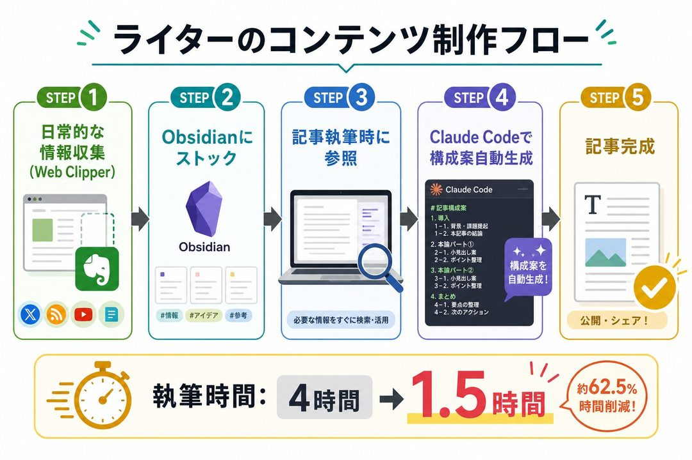
ライターのコンテンツ制作フロー
コンサルタントの場合
課題: 複数クライアントのプロジェクトが同時進行し、情報管理が複雑になる
活用法:
1. クライアントごとにObsidianのフォルダを作成
2. 全ての打ち合わせ・調査・提案内容をObsidianに記録
3. 提案書作成時：
結果: 提案書作成時間が大幅削減。
複数クライアントの情報が混乱なく管理でき、ミスやダブルブッキングが減少。
デザイナー・クリエイターの場合
課題: クライアントのフィードバックと修正履歴の管理が煩雑
活用法:
1. プロジェクトごとにObsidianで「フィードバックノート」を作成
2. 修正指示を受けるたびにノートに記録
3. 納品時：
結果: 「以前の修正の理由が分からない」という問題が解消。
変更履歴を体系的に管理することで、クライアントとのコミュニケーションの質が向上。
5-3 士業（弁護士・税理士・社労士）の活用事例
士業の方にとって、個人情報・守秘義務は最重要の関心事です。
Claude Code × Obsidianはローカル完結型のため、クラウドにデータが飛びません。
これが、士業の方がこの組み合わせを選ぶ最大の理由のひとつです。
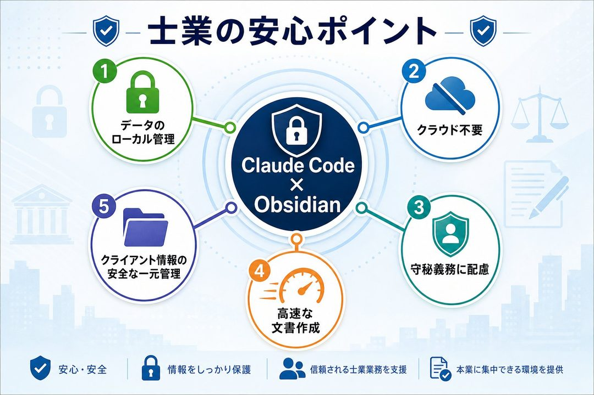
士業の安心ポイント
税理士・公認会計士の場合
課題: 顧客ごとの財務状況や税務情報を整理し、申告シーズンに素早く対応したい
活用法:
1. クライアントごとにObsidianノートを作成し、財務の概況・特記事項を記録
2. 決算期に：
3. 顧問先への説明資料：
結果: 顧問先への説明資料作成が大幅に効率化。
顧客ごとの「記憶」がObsidianに蓄積されるため、ベテランの「暗黙知」を形式知として管理できる。
社会保険労務士の場合
課題: 法改正情報の追跡と、顧問先への適切なアドバイスの提供
活用法:
1. 法改正情報をWeb Clipperで収集し、「法改正情報」タグでObsidianに保存
2. 顧問先への案内作成時：
3. 年に一度の一斉案内：
結果: 法改正対応の情報収集・整理・発信が大幅に効率化。
顧問先への付加価値が高まり、顧客満足度と継続率が向上。
5-4 「3倍速」を実現するための行動計画
ここまで様々な活用事例を見てきました。
最後に、あなたが実際に「仕事3倍速」を実現するための具体的な行動計画を提示します。
Week 1（最初の1週間）：Obsidianの基盤を作る
- Day 1: Obsidianをインストールし、Vaultを作成する
- Day 2-3: フォルダ構成を設定し、初めての日次ノートを書く
- Day 4-5: Web Clipperをインストールし、記事を5本保存する
- Day 6-7: 過去のメモ・文書を10件程度移行する
Week 2（2週目）：Claude Codeを使い始める
- Day 8-9: Claude Codeをインストールし、初めての指示を試す
- Day 10-11: CLAUDE.mdを作成し、自分の仕事環境を設定する
- Day 12-14: 週次報告書や議事録の自動化を1つ試してみる
Week 3-4（3〜4週目）：MCP連携を設定する
- MCP連携の設定を完了させる
- 日次ルーティンの自動化を始める
- 週次レビューの自動化を導入する
Month 2以降（2ヶ月目〜）：習慣として定着させる
- 毎朝の日次ノート作成をルーティン化
- Claude Codeへの指示パターンを自分の仕事に合わせて最適化
- ObsidianのVaultに情報が蓄積されていくにつれ、Claude Codeの提案精度が向上
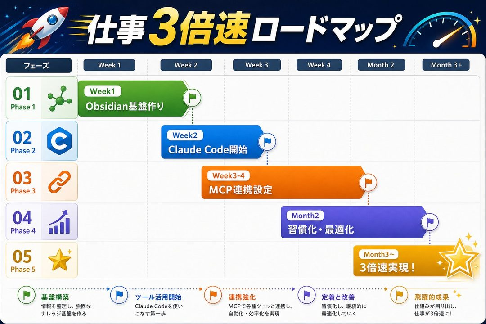
仕事3倍速ロードマップ
「今すぐ完璧に使いこなそう」とは考えないでください。
最初の1週間でObsidianを使い始めるだけで、すでに変化が始まります。
焦らず、一つひとつ積み上げていきましょう。
06おわりに
本書の最後に、改めて伝えたいことがあります。
テクノロジーは、使いこなせた人だけが恩恵を受けます。
Claude CodeもObsidianも、「知っている」だけでは何も変わりません。
「実際に使ってみる」ことで、初めて変化が始まります。
本書を読んでいただいたあなたには、今すぐ以下の3つだけ実行してみてください。
今日できること（30分）：
1. Obsidianをダウンロードしてインストールする
2. 「仕事ノート」という名前でVaultを作成する
3. 今日の日次ノートを1枚作り、今日やることを3つ書く
たったこれだけです。
明日は、昨日書いた日次ノートを見ながら仕事を始めてみてください。
それだけで、「情報の一元管理」が始まります。
1週間後には、Claude Codeをインストールして、最初の指示を試してみてください。
1ヶ月後、あなたの仕事の仕方は確実に変わっています。
3ヶ月後には、「あの頃はなんであんなに時間がかかっていたんだろう」と思えるようになるはずです。
AI時代は、すでに始まっています。
でも、本当の意味でAIを「活用している」人は、まだ少数派です。
本書を手に取ったあなたは、すでにその一歩を踏み出しています。
あとは、小さく始めて、少しずつ育てていくだけです。
Claude Code × Obsidianで、あなたの仕事が変わりますように。
*本書の内容は2026年5月時点の情報に基づいています。
各ツールのバージョンアップにより、具体的な操作方法が変わる場合があります。
最新情報は各公式サイトをご確認ください。
© 竹谷知悦 / 特別プレゼント版